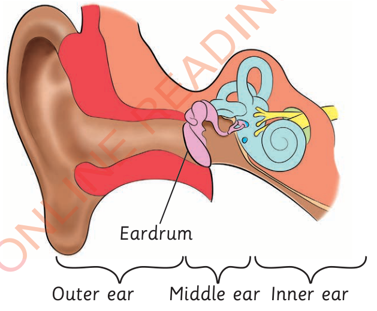

(d) Applying appropriate body oil or jelly after bath; and
(e) Eating nutritious food and drinking enough water.
The ear
The ear is an organ used for hearing. It can recognise different sounds. The ear consists of three major parts, namely the outer ear, middle ear and inner ear. Figure 10 shows the parts of an ear.

Figure 10: Parts of an ear
Recognising sounds
The outer ear collects sound waves and directs them into the middle ear through the eardrum. The middle ear receives sound waves from eardrum and passes them to the inner ear. The inner ear passes the sound waves to the brain where the sound is interpreted.